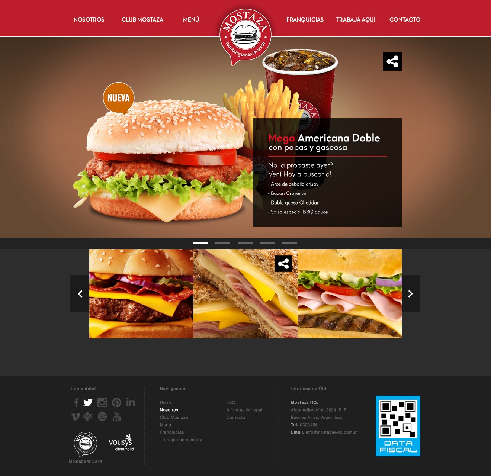
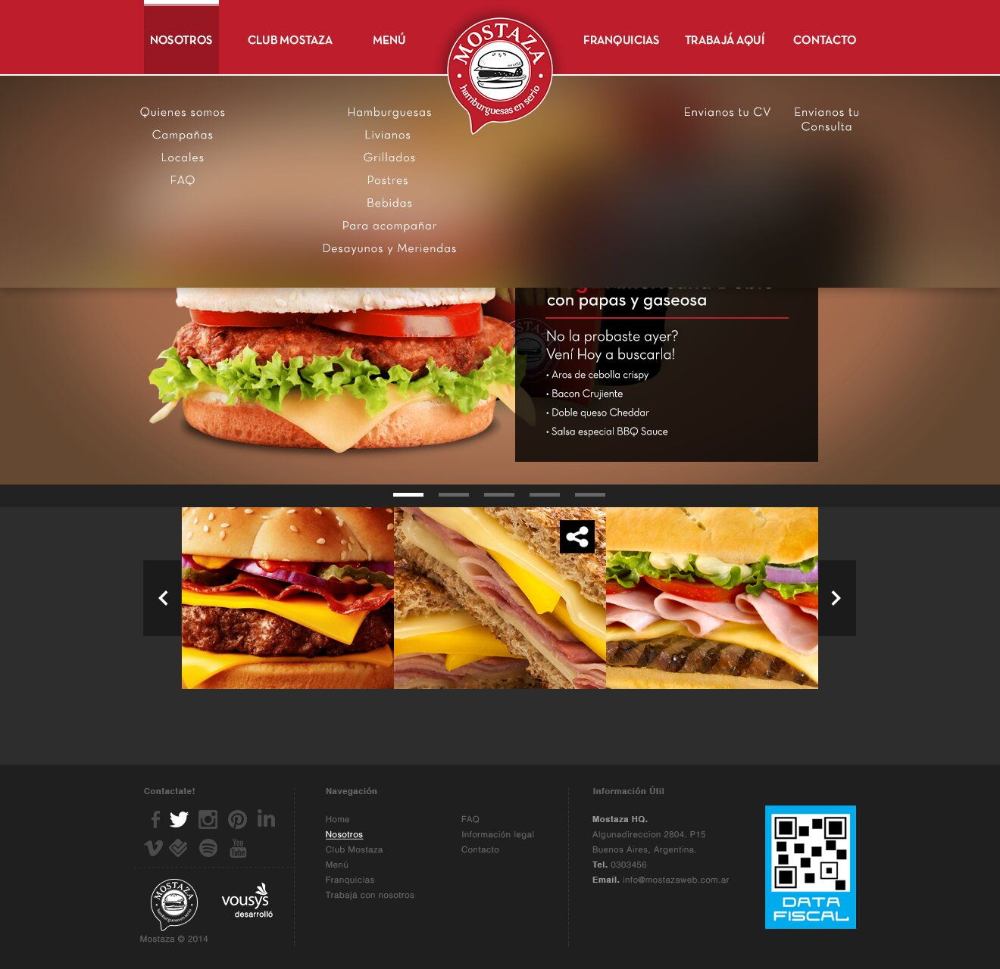
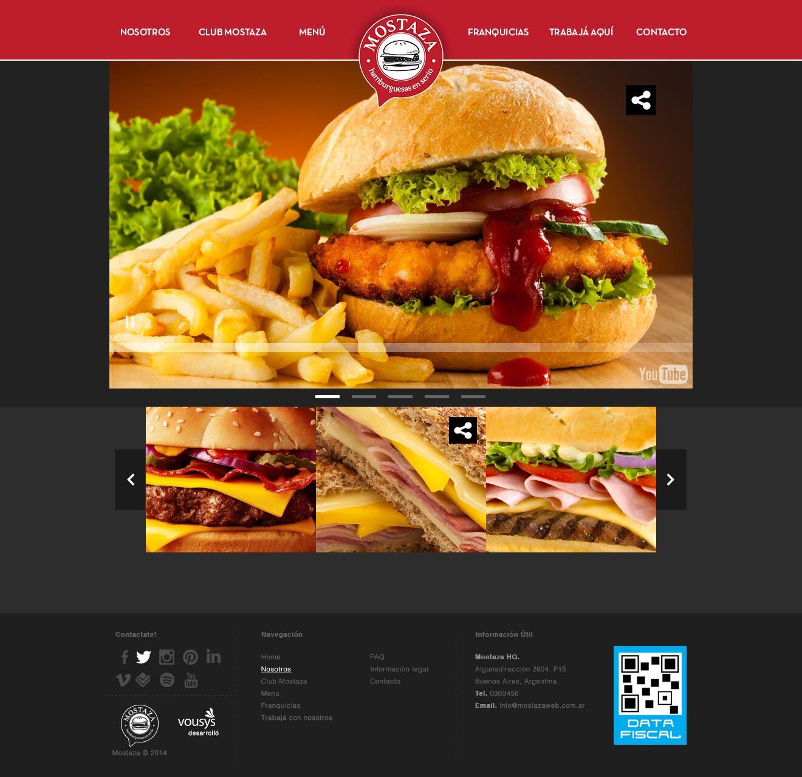
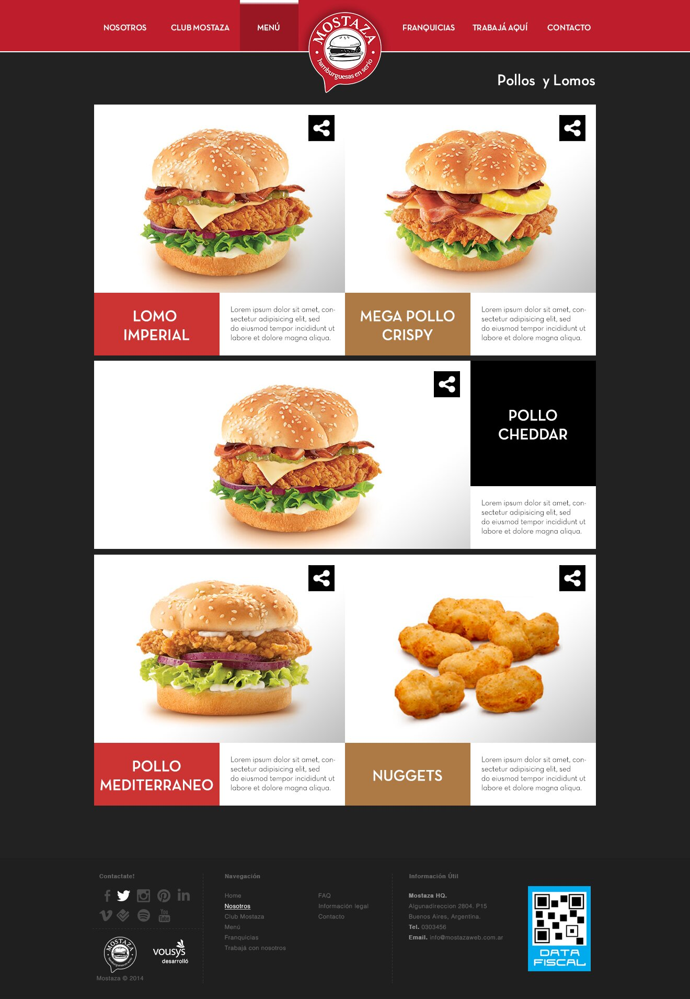
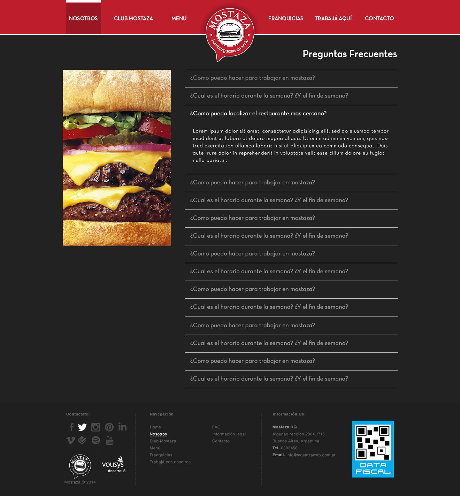
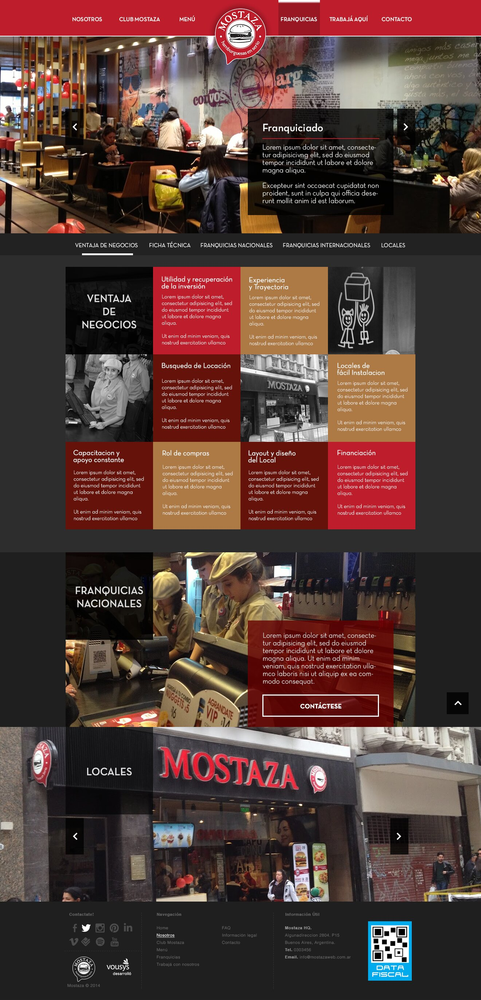
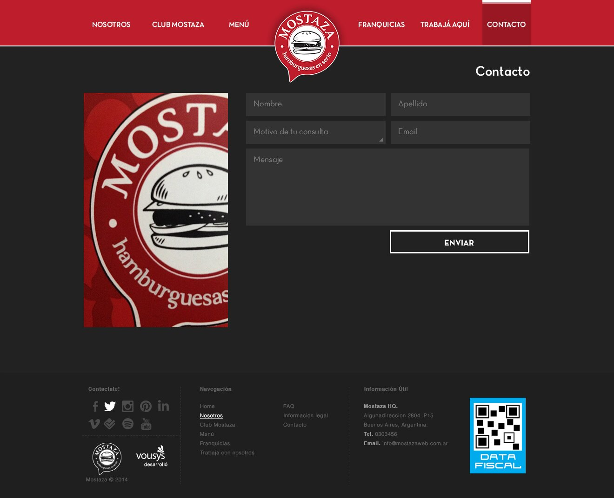

Mostaza is a fast-food burger chain in Argentina. This case study shows both ends of the process for their website redesign: low-resolution wireframes marked up with implementation notes, and the final high-resolution screens that shipped.
Every key screen went through a wireframe pass first, marked up with notes calling out exactly how each interactive element should behave — slider timing, share-icon hover states, image sourcing — before any visual design work began.
The finished high-resolution designs for the same set of key pages, ready for build.







Annotating the wireframes directly, instead of writing a separate spec document, kept every interaction note attached to the exact element it described, so nothing got lost in translation between design and build.